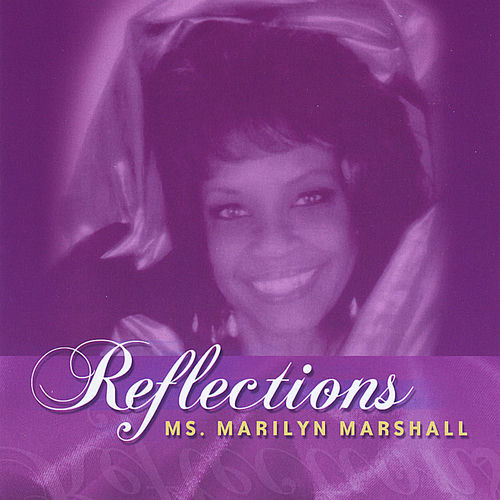

Marilyn Marshall
Marilyn Marshall was an American singer of jazz, rhythm and blues, and gospel music. She toured throughout the United States, Canada and the Bahamas. Marshall was a veteran of stage and television and received “Entertainer of The Year” honors three years in a row in her home county of Burlington County, New Jersey.
Complete Discography & Tracklists (2)